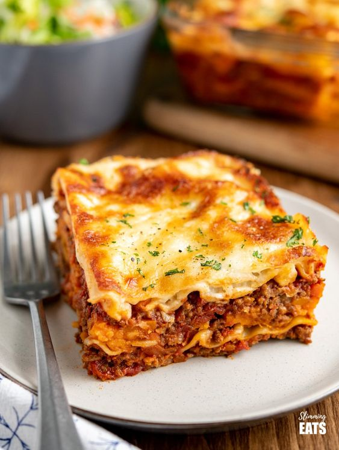

Open main menu
Home
Bolo de Cenoura
Purê de Batata
Lasanha
Home
Bolo de Cenoura
Purê de Batata
Lasanha
Receitas Culinárias
Bolo de Cenoura
60 minutos
Purê de Batata
30 minutos

Lasanha
1 hora e 25 minutos